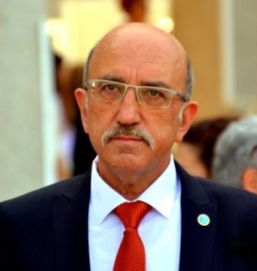

Av. Nizamettin Sağır
Av. Nizamettin Sağır در سال 1987 از دانشکده حقوق دانشگاه آنکارا فارغالتحصیل شد و در سال 1988 Sağır Hukuk Bürosu را تأسیس کرد. او عضو کانون وکلای آنتالیا (Antalya Barosu) است و عمدتاً در حقوق ساختوساز و حقوق اداری شهرسازی و نیز سلب مالکیت، حقوق تجارت و حقوق تعهدات فعالیت میکند.